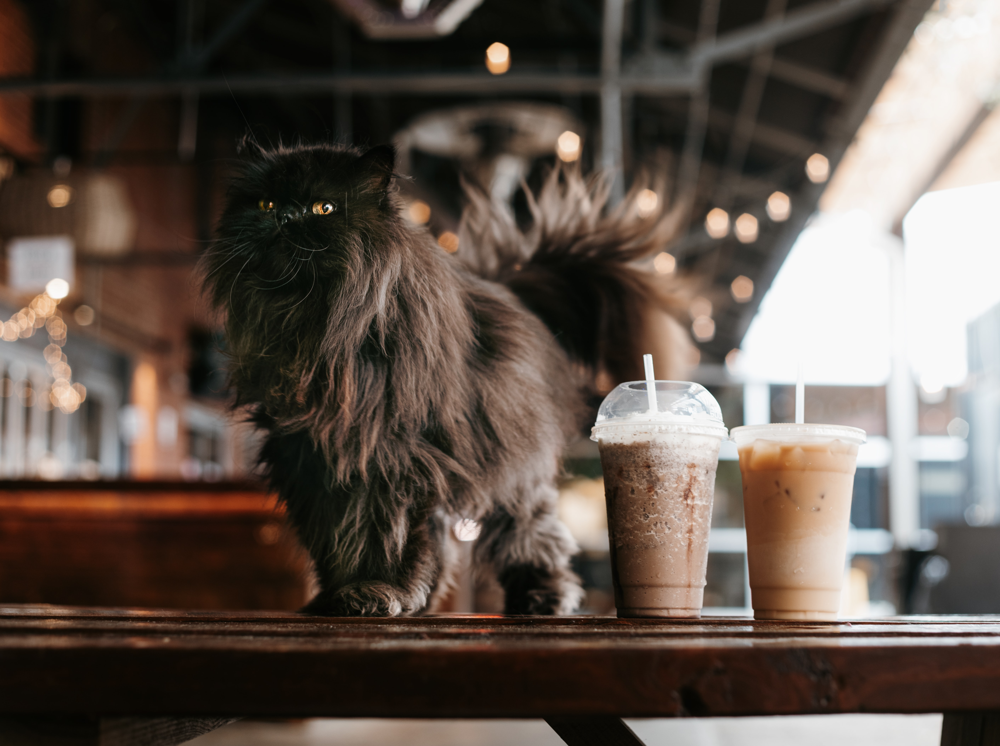
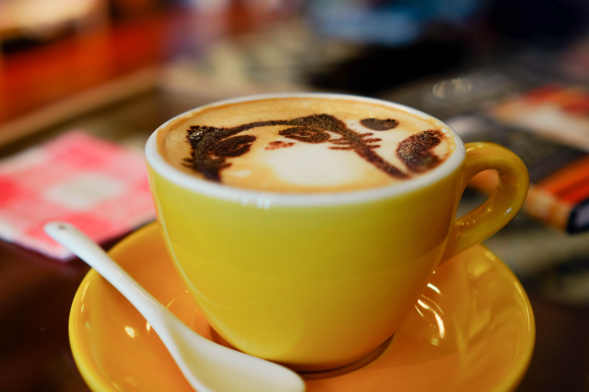

Welcome
Welcome to Purrfect Cat Cafe, the friendliest cat-lover's destination in hip and artsy Acme Beach! Enjoy snuggling and cuddling with adorable and ADOPTABLE cats & kittens in our trendy lounge, kitten lounge, and outdoor Catio.

Meet our kitties
Check out our awesome felines, each one is a shining star in their own unique way.
Our playful, stunning, and friendly cats will
help visitors unwind and relax.
INSTAGRAM

Plan Your visit
At Purrfect Cat Cafe, we're all about saving cats and kittens, and we're passionate
about creating a hip cat community that you'll want to be a part of.
BOOK NOW
Donate
Looking for a way to make a difference in the lives of rescue cats? Look no further than Purrfect Cat Cafe. Every little bit helps, so give today and help us give these furry friends the purrfect chance at a better life.
DONATE